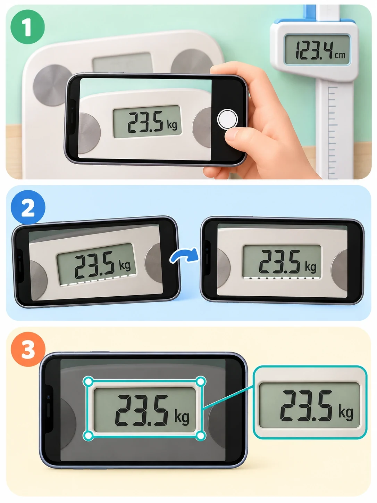

tallCheck / 사용 안내도움말 홈 ↗
03 / READ A PHOTO
사진 속 숫자를,
기록으로 가져오세요
디지털 키 측정기와 체중계의 결과 표시창을 읽는 기능입니다. 사람의 전신 사진으로 키를 추정하는 기능은 아닙니다.
처음 사용할 때는 인식 모델을 준비합니다
등록 화면에서 사진에서 키·몸무게 읽기를 선택하면 최초 한 번 인식 모델 다운로드를 안내합니다. 인터넷 연결과 저장 공간을 확인하고 다운로드와 검증이 끝날 때까지 기다려 주세요. 이후 인식은 기기 안에서 수행됩니다.
모델 다운로드와 앱 업데이트는 서로 다릅니다.
모델은 사진을 읽는 자료이고, 앱 업데이트는 기능과 오류 수정이 담긴 새 앱을 설치하는 과정입니다. 다운로드 중 앱이 종료되거나 준비가 반복된다면 도움말 → 업데이트 확인에서 앱 버전부터 확인하세요.
사진 촬영부터 결과 저장까지
숫자가 선명한 결과 표시창을 준비합니다
디지털 키 측정기나 체중계에 결과가 표시된 상태에서 촬영하거나 기존 사진을 선택합니다. 반사광과 손이 숫자를 가리지 않게 하고, 소수점과 단위도 보이게 합니다.
사진의 숫자를 가로로 수평 정렬합니다
사진 편집 화면에서 회전·이동·확대를 조절합니다. 숫자가 눕거나 기울어진 상태보다 수평으로 보이는 사진을 사용하세요.
표시창 주변만 잘라냅니다
측정기 본체와 불필요한 배경은 제외하고 여백을 조금 남깁니다. 숫자의 처음과 끝, 모든 소수점과 단위가 잘리지 않도록 합니다.
인식한 값과 원본 사진을 비교합니다
잘못 읽힌 숫자나 소수점이 있으면 직접 수정합니다. 키·몸무게가 뒤바뀌지 않았는지, 단위와 값이 맞는지도 확인한 뒤 적용하세요.
등록 화면에서 날짜와 값을 확인하고 저장합니다
적용만으로 기록 저장이 끝난 것은 아닙니다. 해당 아이의 등록 화면에서 최종 내용을 확인하고 저장합니다.

잘 읽히지 않을 때
- 표시창에 비친 조명·창문·휴대폰의 반사를 피해서 다시 촬영합니다.
- 흐릿한 사진을 크게 확대하기보다, 선명하게 가까이 찍은 원본을 사용합니다.
- 여러 숫자 줄이 있다면 읽으려는 결과가 충분히 보이는지 확인합니다.
- 소수점이 빠지거나 다른 숫자로 읽히면 직접 수정한 뒤 적용합니다.
사진 읽기가 어려운 경우에는 키·몸무게를 직접 입력하여 기록을 이어갈 수 있습니다.